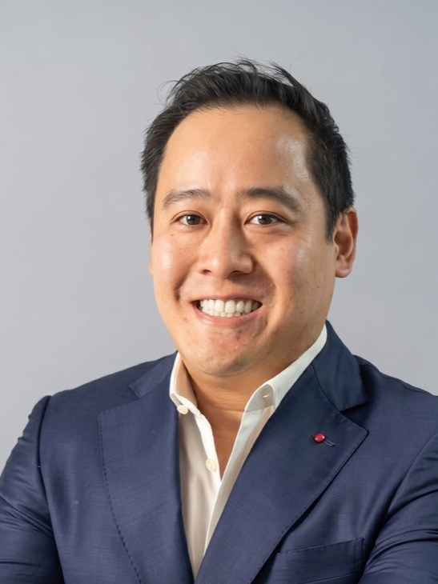

O médico cuidado paciente.A NexVita cuidada clínica.
Você cuida do paciente. A NexVita assume o que consome o seu dia fora da consulta: o WhatsApp e a agenda, a equipe, o financeiro e os indicadores. Sem trocar a sua equipe nem os sistemas que a clínica já usa. Tudo desenhado sob medida para o seu consultório, a partir de uma conversa de diagnóstico.
Na prática: o paciente escreve à noite e recebe resposta rápida e humana no WhatsApp, no tom da sua clínica. A agenda fica confirmada e organizada, e toda semana você recebe o relatório com os números.
Faça o diagnóstico da sua clínica em 3 minutos e receba sua pontuação.
“Meus pacientes não ficam mais travados no agendamento.” — Dra. Ana Luiza Oliveira, pediatria
- Sem trocar a sua equipe
- No sistema que a clínica já usa
- Relatório toda semana
Clínicas que já trabalham com a NexVita
Fica com o médico
Hoje, quase tudo isto passa pelas suas mãos.
- O diagnóstico e a conduta
- A relação com o paciente
- Responder o WhatsApp e encaixar a agenda
- Contratar e treinar a equipe
- Pagamentos, notas e fluxo de caixa
- Processos e indicadores
- O pós-consulta e o retorno
Fica com a NexVita
Uma a uma, as frentes de empresa mudam de mãos.
- Atendimento humanizado e agenda
- Recrutamento e rotina da equipe
- Financeiro e BPO
- Processos e indicadores de gestão
- Jornada do paciente e reativação
+45% em consultas e protocolos vendidos — Dra. Agnéris Torres
Ver como trabalhamosA jornada do paciente, cuidada de ponta a ponta.
Atendimento humano na linha de frente e tecnologia nos bastidores, em cada etapa em que um paciente costuma se perder.
Primeiro contato
Resposta rápida e humana no WhatsApp, no tom da clínica.
Agendamento
Encaixes, lista de espera e agenda organizada sem retrabalho.
Confirmação
Lembretes e confirmação ativa para reduzir faltas.
Consulta
Recepção preparada, com documentos e pagamento resolvidos antes.
Pós-consulta
Acompanhamento, pesquisa de satisfação e dúvidas respondidas.
Retorno
Retornos lembrados e pacientes antigos reativados no tempo certo.
Resultados de clínicas que já trabalham com a NexVita.
Números de clientes reais, com o mesmo método que levamos a cada clínica nova.
4x
o faturamento de uma clínica ginecológica parceira, sem aumentar o investimento em mídia.
45%
a mais em consultas e protocolos vendidos na clínica da Dra. Agnéris Torres.
5 min
é o tempo médio de primeira resposta a cada novo paciente da Eludicar.
“É incrível a virada de chave que o time da NexVita trouxe para o meu dia a dia. Meus pacientes não ficam mais travados no agendamento, agora tudo flui como tem que ser.”
“Agregar a NexVita no nosso dia a dia foi um divisor de águas. Com o concierge especializado em encantamento, passamos a ter 45% a mais de consultas e protocolos vendidos.”
Faça o diagnóstico da sua clínica em 3 minutos e receba sua pontuação
Responda algumas perguntas sobre agenda, faltas, faturamento e equipe e veja onde a sua clínica perde tempo e pacientes. O diagnóstico é online; o WhatsApp da NexVita, (11) 93624-4354, é para falar com a nossa equipe.
5 min é o tempo médio de primeira resposta a cada novo paciente da Eludicar.
O que os médicos perguntam primeiro
“Já tenho secretária e software.”
Ótimo. Trabalhamos com a equipe e os sistemas que a clínica já usa. Não é preciso trocar ninguém nem nenhuma ferramenta para começar.
Quanto custa e qual o retorno?
O investimento depende do escopo e é apresentado em proposta. Para começar, faça o diagnóstico gratuito e receba a pontuação da sua clínica.
Quem mais vocês atendem?
Consultórios com um ou dois médicos e clínicas com dezenas de profissionais: pediatria, ginecologia e obstetrícia, estética e clínicas multiprofissionais. Entre elas, Eludicar, Clínica David E. Uip e Lumi Clínica.
E os dados dos meus pacientes?
Assinamos acordo de sigilo antes de qualquer acesso e operamos com compromisso de respeito à LGPD. Não fazemos consulta nem conduta médica: o ato médico continua com você.
Deixe seu contato e nós chamamos você
Três campos, sem compromisso. Respondemos em horário comercial, de segunda a sexta, das 8h às 20h.
“Passamos a ter 45% a mais de consultas e protocolos vendidos.” — Dra. Agnéris Torres
Contadores e agências: indique a NexVita
Se você atende clínicas médicas, podemos trabalhar juntos. Fale com a gente e conversamos sobre como fazer essa parceria.
Para começar
Faça o diagnóstico da sua clínica em 3 minutos e receba sua pontuação.
Responda algumas perguntas sobre agenda, faltas, faturamento e equipe. Você recebe uma pontuação e vê onde a clínica perde tempo e pacientes.
- 1
Responda online
Perguntas rápidas sobre agenda, faltas, faturamento e equipe. Leva cerca de 3 minutos.
- 2
Receba sua pontuação
Veja em quais pontos a clínica perde tempo, pacientes e receita.
- 3
Converse, se quiser
Fale com a equipe da NexVita pelo WhatsApp para entender os próximos passos. Sem compromisso.
O diagnóstico é gratuito e online. Acordo de sigilo assinado antes de qualquer acesso aos dados da clínica.
WhatsApp da clínica Exemplo
Oi, boa noite. Vocês têm horário com a doutora esta semana?
Boa noite, Mariana. Temos quinta às 10h ou sexta às 16h. Qual fica melhor?
Quinta às 10h.
Prontinho, está agendado. Amanhã envio a confirmação por aqui.
Agenda Quinta
09h00 · Retorno
10h00 · Mariana · primeira consulta agendada
11h00 · Livre
Lembrete enviado na véspera confirmada
Uma retaguarda desenhada para o seu consultório.
Não existe pacote pronto. Cada clínica tem uma rotina, uma equipe e gargalos diferentes. Algumas precisam de mãos no WhatsApp e na agenda, outras de gestão e organização financeira, outras das duas coisas. Por isso tudo começa por uma conversa.
- 1
Conversa de diagnóstico de 20 minutos, sem compromisso.
- 2
Proposta sob medida, com o que a NexVita assume e o que fica com a sua equipe.
- 3
Implantação acompanhada, com relatório toda semana.
Para quem é
Para médicos com consultório próprio, sozinhos ou com um ou dois sócios, e para clínicas maiores em que o dono ainda resolve a operação. Atendemos pediatria, ginecologia e obstetrícia, estética e clínicas multiprofissionais. Você segue à frente da medicina, e a NexVita cuida da empresa.
Sócios dentro da operação.
Gestão vinda do mercado financeiro e operação vinda do atendimento ao cliente, aplicadas à rotina de clínicas particulares.

Lidera estratégia, estruturação comercial e gestão, com trajetória no mercado financeiro.
LinkedInLidera processos, atendimento e implantação, com experiência em customer service e melhoria contínua.
LinkedInTecnologia nos bastidores. Pessoas na linha de frente.
A NexVita AI, nossa unidade de inteligência artificial aplicada, automatiza o que é repetitivo na clínica para que a equipe tenha mais tempo para o paciente. O vínculo com o paciente continua humano.
Conhecer a NexVita AIPerguntas frequentes
A NexVita oferece consultas ou gestão de clínicas médicas em São Paulo?
A NexVita oferece gestão de clínicas médicas em São Paulo, não consultas ou procedimentos médicos. Nosso trabalho é organizar e executar a operação da clínica, com processos, equipe, atendimento, agenda, financeiro e tecnologia.
A gestão de consultório médico em São Paulo atende quem trabalha sozinho ou com poucos médicos?
Sim. A gestão de consultório médico em São Paulo atende médicos com agenda própria, desde operações com um ou dois médicos até clínicas com dezenas de profissionais. Pediatria e estética são prioridades, mas a NexVita atende todas as especialidades.
A gestão executiva e operacional inclui colocar as melhorias em prática?
Sim. A gestão executiva e operacional da NexVita não se limita a recomendações. Participamos da implantação de processos e rotinas, da organização da equipe e da execução das frentes contratadas, com acompanhamento dos indicadores de desempenho.
Preciso trocar minha secretária para começar a implantação de processos e rotinas?
Não é uma condição para começar. A implantação de processos e rotinas considera a equipe que sua clínica já possui. A NexVita também oferece treinamento de secretárias para clínicas médicas e apoio à contratação e gestão de equipes.
A implantação de processos e rotinas exige trocar os sistemas da clínica?
Trabalhamos com os sistemas que a clínica já utiliza, como agenda, prontuário, WhatsApp e financeiro. A implantação de processos e rotinas parte dessa estrutura, sem pressupor a substituição das ferramentas existentes.
O atendimento no WhatsApp para clínicas médicas é feito por pessoas?
Sim. No atendimento no WhatsApp para clínicas médicas, pessoas conduzem o relacionamento com os pacientes. A tecnologia apoia a operação nos bastidores, preservando o atendimento humanizado do primeiro contato ao pós-consulta.
Como reduzir faltas em clínicas médicas?
A gestão de agenda para clínicas médicas organiza agendamentos, confirmações e acompanhamento das faltas. Na NexVita, as metas são combinadas no início e os indicadores de desempenho orientam os ajustes. Não prometemos um percentual fixo de redução.
Quanto custa uma consultoria para clínicas médicas?
Para conhecer o investimento em gestão executiva e operacional, entre em contato com a NexVita e solicite uma proposta para sua clínica.
Quais indicadores de desempenho a NexVita acompanha?
Os indicadores de desempenho são combinados no início do trabalho e podem incluir faltas, tempo de resposta e satisfação dos pacientes. O acompanhamento acontece em reuniões mensais de gestão.
Como a NexVita trata o sigilo e a proteção de dados dos pacientes?
O sigilo e a proteção de dados dos pacientes fazem parte da forma de trabalho da NexVita. Assinamos acordo de sigilo antes de qualquer acesso e conduzimos a operação com compromisso de respeito à LGPD.
O que a gestão financeira para clínicas médicas contempla?
A NexVita oferece organização financeira e BPO financeiro para clínicas médicas em São Paulo. Essa frente organiza e executa as rotinas financeiras definidas no trabalho, conectando o financeiro à gestão executiva e operacional.
Vocês oferecem treinamento de secretárias para clínicas médicas?
Sim. O treinamento de secretárias para clínicas médicas faz parte da atuação com equipes de recepção. Trabalhamos o atendimento humanizado e a implantação de processos e rotinas, além de apoiar a contratação e a gestão da equipe.
A automação e inteligência artificial para clínicas médicas substitui o contato humano?
Essa não é a proposta da NexVita. A automação e inteligência artificial para clínicas médicas, por meio da NexVita AI, apoia a eficiência da operação. Mantemos pessoas no relacionamento com os pacientes, combinando tecnologia com atendimento humano.
Onde acontece o atendimento de gestão executiva e operacional da NexVita?
A gestão executiva e operacional combina atendimento no escritório da Vila Olímpia, na clínica do cliente e online. Atendemos presencialmente São Paulo capital e Grande São Paulo, com atendimento online para outros grandes centros do Brasil.